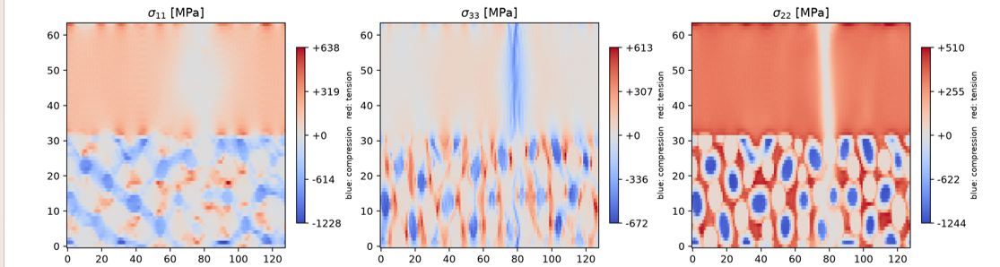

FEM Phase-Field Fracture Simulation
Representative results from a coupled mechanical and phase-field fracture calculation. The figures show spatial damage localization and the distribution of selected stress components.


Numerical parameters, loading conditions and validation information can be added here when available.